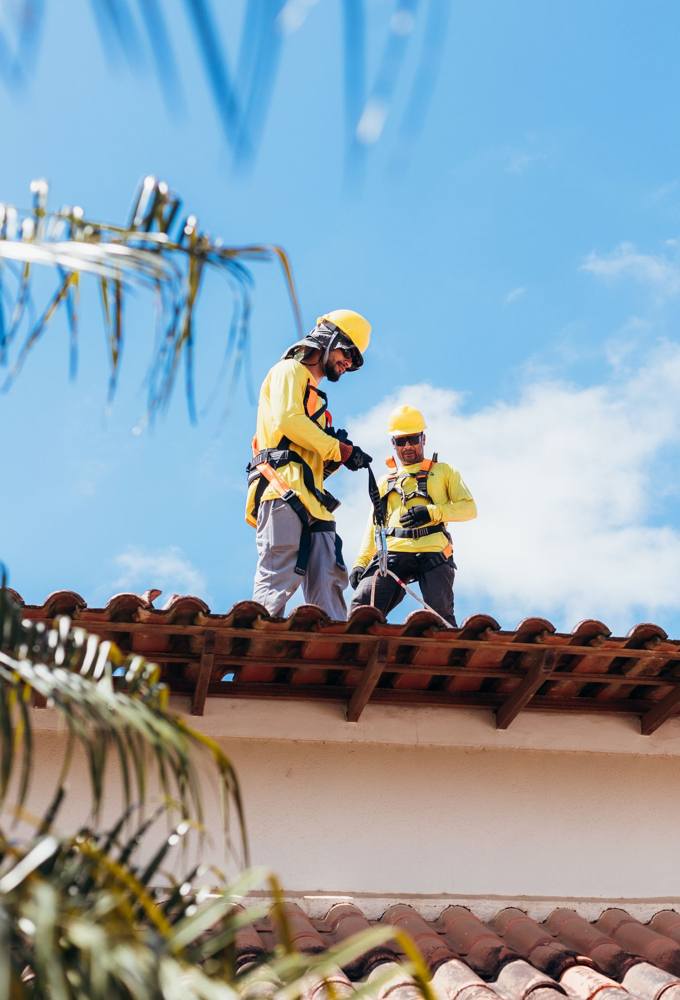
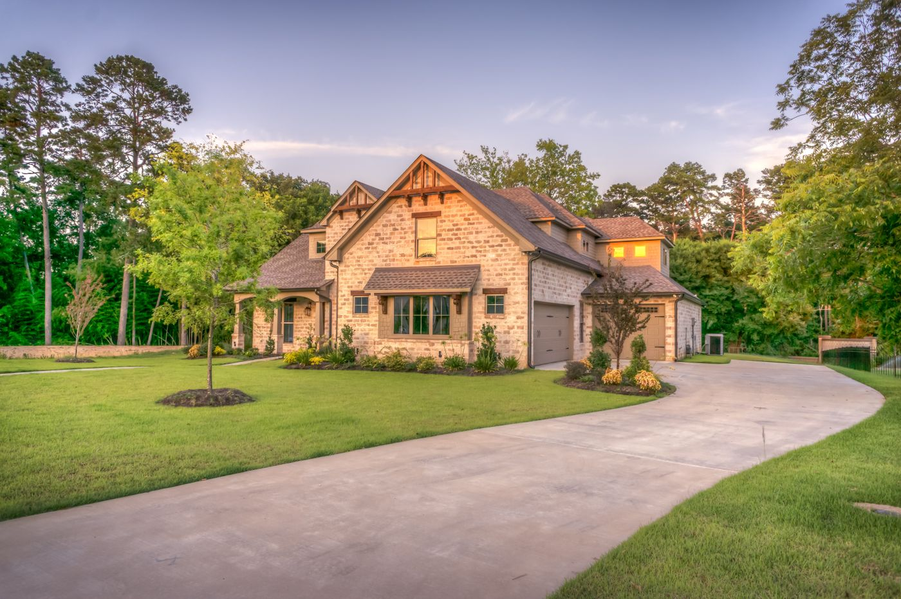
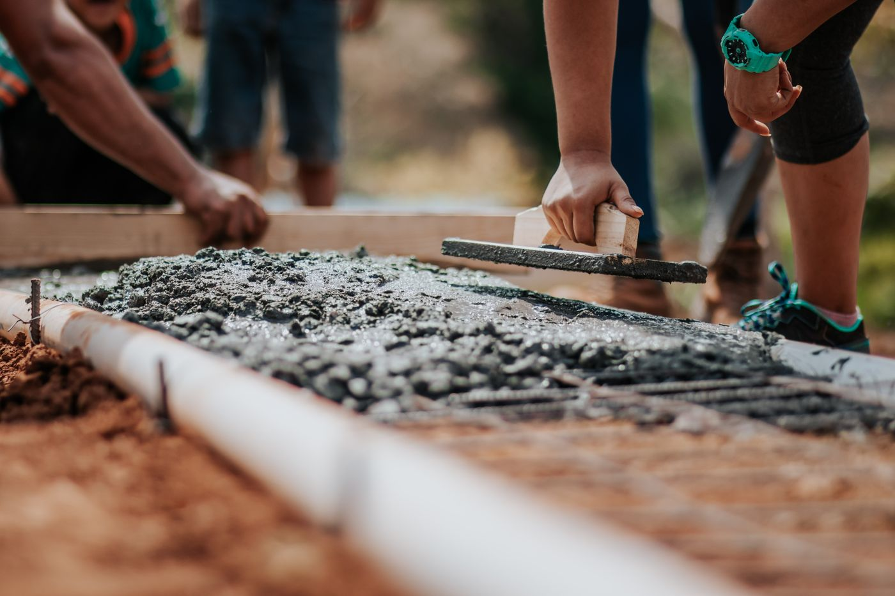
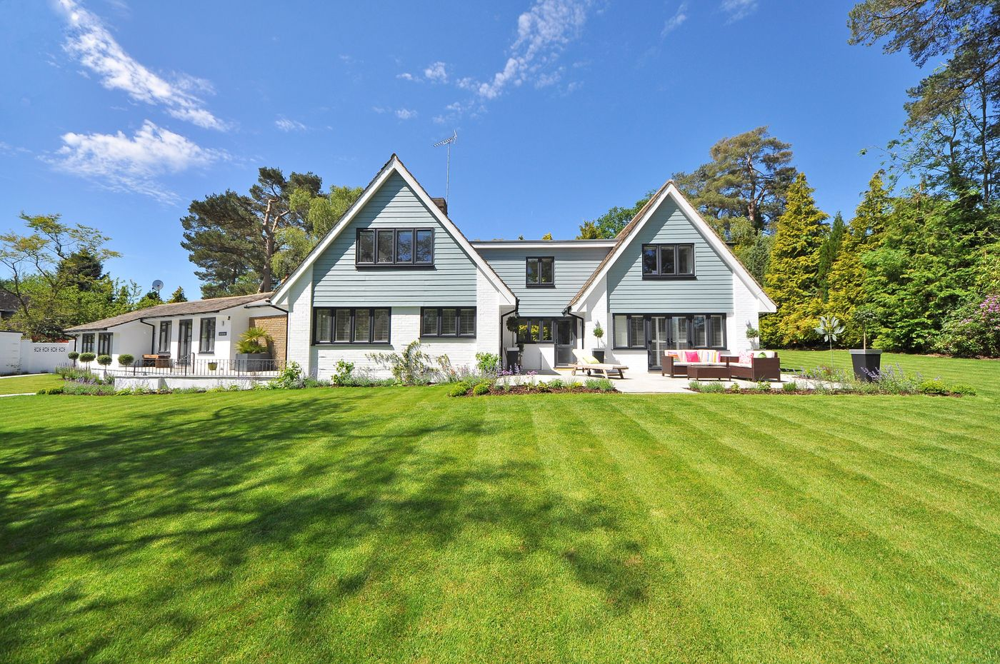
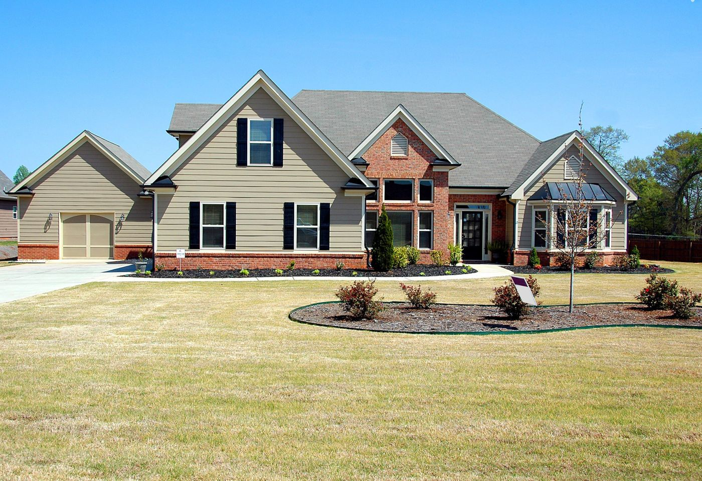
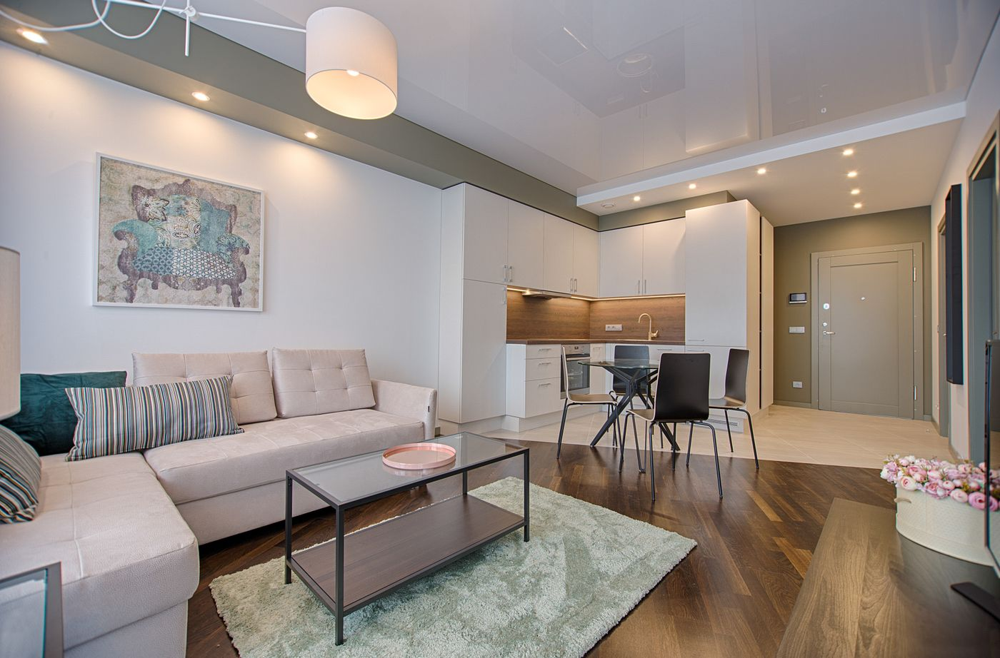
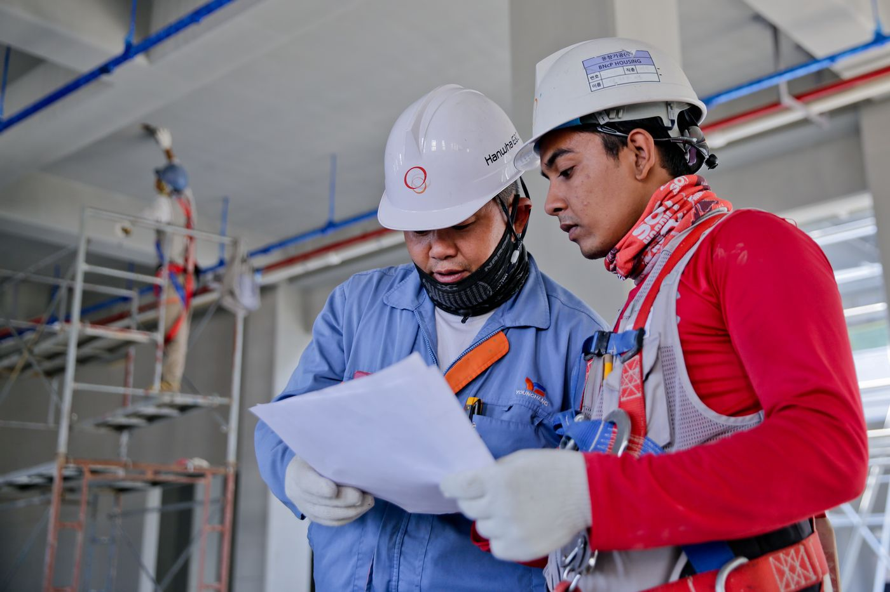

Toiture & démoussage
Nettoyage, entretien et valorisation des couvertures de maison.
Demander une estimation →Entretenez, rénovez et embellissez votre maison. Une approche de proximité pour vos travaux extérieurs dans le Loir-et-Cher.
De l'entretien régulier aux travaux de rénovation, découvrez les prestations présentées dans cette proposition de site.

Nettoyage, entretien et valorisation des couvertures de maison.
Demander une estimation →
Entretien des façades et travaux pour rafraîchir votre extérieur.
Demander une estimation →
Réparations et petits aménagements maçonnés autour de l'habitat.
Demander une estimation →
Espaces verts et travaux de remise en état de vos extérieurs.
Demander une estimation →Une activité tournée vers les besoins locaux.
Précisez votre projet pour faciliter les échanges.
Un interlocuteur pour les services de l'habitat.
Photos d'illustration du secteur, non issues des chantiers de BATIPLUS41. Les photos de réalisations de l'entreprise pourront les remplacer après accord.

La mise en valeur d'une couverture entretenue.

Une façade accueillante et bien mise en valeur.

Des aménagements qui améliorent le cadre de vie.

Une vitrine claire pour comprendre rapidement les prestations, les zones d'intervention et les moyens de contact. Cette maquette est une démonstration destinée à présenter le potentiel d'un site professionnel.
Parlez de vos travaux et de vos besoins.
Faire une demande →Cette page présente une démonstration non officielle. Le formulaire permet de préparer un message de demande de devis, mais aucun dossier n'est envoyé ni enregistré par BATIPLUS41 depuis cette maquette.
Zone : Loir-et-Cher (41) et alentours
Contact professionnel public :
07 63 07 20 82 — Appeler